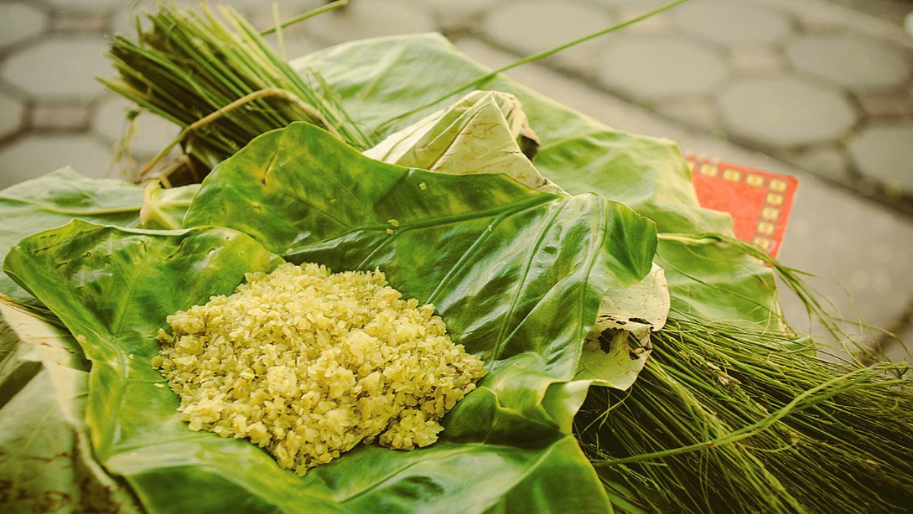
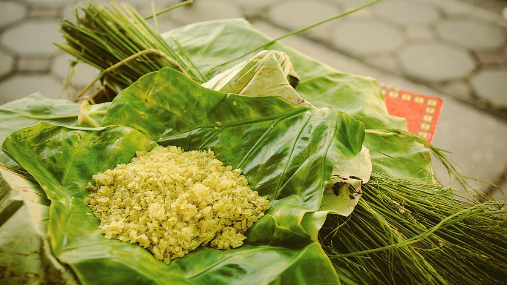

Cốm
Cốm là đặc sản truyền thống của Hà Nội, đặc biệt nổi tiếng ở làng Vòng. Cốm được làm từ những hạt lúa non, rang nhẹ rồi giã dẹt, có màu xanh dịu và vị thơm ngọt thanh. Đây là món quà tinh tế, gắn liền với mùa thu Hà Nội.
Cốm là đặc sản truyền thống của Hà Nội, đặc biệt nổi tiếng ở làng Vòng. Cốm được làm từ những hạt lúa non, rang nhẹ rồi giã dẹt, có màu xanh dịu và vị thơm ngọt thanh. Đây là món quà tinh tế, gắn liền với mùa thu Hà Nội.
